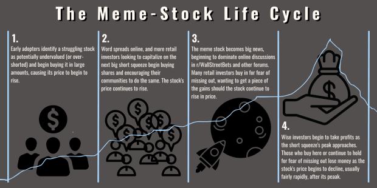

The goal
Why I want to learn web development
I want to learn web development not just because it is required, but because I want to become someone who earns money through technology. The world revolves around it, and I want to become successful.

Where it started
My first inspiration
It all began when I was 12 years old. I lived in Diffun, a town in the province of Quirino. My neighbor was good with computers. I am not sure what he learned in school, so I will assume he was an IT professional.
I played in his computer shop every day during summer break because it was next to our house. Years later, he got a job abroad and his shop closed. His house grew bigger, and I think he became successful. I want to achieve something similar through technology.